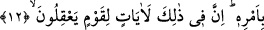

tefekkür, yetmiş yıllık ibâdetten daha hayırlıdır.”[132]
Rivâyet edilmiştir ki, Osman (r.a.) tedebbür ve tefekkür etme imkânı bulduğu için vitr
namazında Kur’anı hatmederdi. Tedebbür ve tefekkürü tam yerine getiremeyen kimseye
bunu mubah görmez ve ona bunu yapabilecek kadar üç veya yedi gün gibi bir süre tayin
ederdi.
Âyetteki işâret şöyledir: “Gökten suyu” feyz suyunu “indiren O’dur. Ondan hem size
içecek” kalbleriniz için muhabbet içeceği “vardır, hem de hayvanlarınızı otlatacağınız
bitkiler.” Beşerî kâbiliyetler ve bunlar vâsıtasıyla meydana gelen şeyler vardır. Nefis
sürülerini orada otlatırsınız ve bu sebeple ruhlarınızın gıdası için tâat buğdayları,
doğruluk zeytini, güzel ahlak hurmalığı ve rabbânî vâridat üzümleri biter; aklî bilgiler,
müşâhedeler, mükâlemeler, bütün haller de çeşit çeşit meyvelerdendir. “İşte bunlarda”
bu hikmetli işleri akıl nazarıyla “düşünen bir toplum için büyük bir ibret vardır.”
12. O, geceyi, gündüzü, güneşi ve ayı sizin hizmetinize verdi. Yıldızlar da
Allah’ın emri ile hareket ederler. Şüphesiz ki bunlarda aklını kullananlar için pek
çok deliller vardır.
“O,” uyumanız, geçiminizi temin etmeniz, meyvelerin toplanması ve olgunlaşması için
“geceyi, gündüzü” hizmetinize verdi.
Allah Teâlâ’nın: “Gece ile gündüzü birbiri ardınca getiren O’dur.” (el-Furkan,
25/62) âyetinde ifâde buyurduğu gibi gece ve gündüzü birbiri ardınca getirmiştir.
Bazıları demiştir ki: Gece Âdem (a.s.) gibi erkek, gündüz ise Havva gibi dişidir. Gece
cennetten, gündüz ise cehennemdendir. Bu yüzden geceleyin ünsiyet daha çoktur.
“Güneşi ve ayı” hareket ve ışıkta biri asıl, diğeri ona tâbi olarak “sizin hizmetinize
verdi” Hayatın devamını sağlayacak şekildeki hareketleri sizin maslahat ve menfaatiniz
içindir.
Sa‘dî der ki:
Bulut, rüzgar, ay, güneş ve felek her biri bir iştedir
Ta ki sen bir ekmek kazanasın ve onu gafletle yemeyesin
Hepsi senin için kendinden geçmiş ve hizmetinde sâbittir
Şart-ı insaf değildir ki sen ferman dinlemeyesin.
et-Teshir, râm etmek, emrine ve hizmetine emrine vermek demektir. Sayılan şeylerin
insanların emrine verilmesi, “Bunu bizim emrimize veren Allah’ın şanı ne yücedir.”